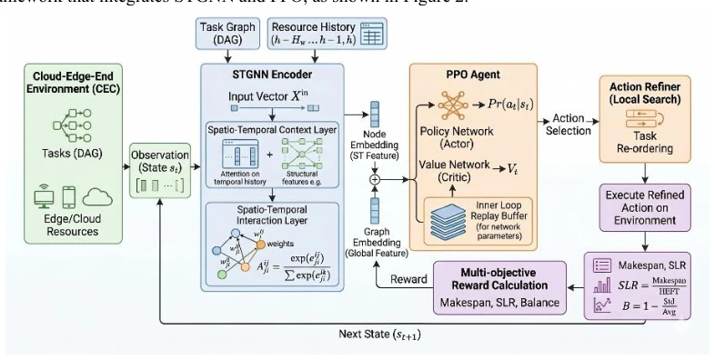
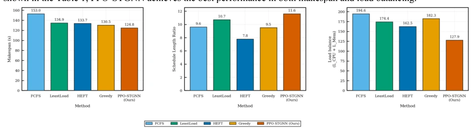
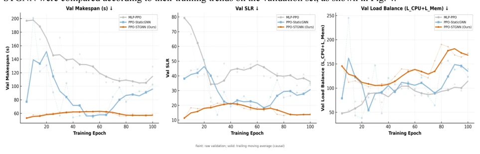

This paper dresses up cloud-edge-end scheduling with the veneer of deep learning; essentially, it remains an application of reinforcement learning in resource allocation. The authors integrate task topology and resource states using STGNN, then tune parameters with PPO; it sounds attractive, but the core approach is not novel—behavior cloning pre-training to address cold start is already standard practice in the DRL field. The highlight lies in capturing spatiotemporal features, given that cloud-edge-end resources are dynamically changing, making static graph neural networks indeed insufficient. However, this has little to do with robot control in Embodied AI, at best counting as 'cloud embodiment'. Experimental data shows significant improvement in load balancing, but limited improvement in makespan, indicating the algorithm favors 'fairness' over 'speed'. It is a powerful tool for pure system optimization scenarios, but forcing it into the robotics field may lead to poor adaptation.
With the popularization of IoT and 5G, computation-intensive DAG tasks have surged in cloud-edge-end collaborative environments [1]. However, cloud, edge, and end nodes are highly heterogeneous in computing power, bandwidth, and energy consumption, making task scheduling an NP-hard problem. Traditional heuristic algorithms like HEFT rely on static rules and lack adaptability [3]. Although Deep Reinforcement Learning (DRL) improves flexibility, early MLP-based methods flatten task features, losing topological structure information [4]. Recent GNN-based methods can capture dependencies [5], but most focus on static topology, ignoring dynamic resource changes over time and hierarchical network constraints [6]. Therefore, existing methods struggle to cope with highly dynamic cloud-edge-end workloads, urgently needing a scheduling scheme that can model both task logic and resource spatiotemporal evolution simultaneously.
The overall framework is based on end-to-end reinforcement learning with PPO and STGNN. First, construct state representation; physical resource states extract spatial connection features between nodes via GAT, combined with GRU to capture resource evolution dynamics within historical time windows; DAG task graphs aggregate predecessor and successor information via GCN, finally spliced into a joint environment representation. The action space adopts task-node joint matching, and designs topological action masks to filter illegal paths. The reward function includes step-level penalties (response time, transmission cost, load balancing) and global terminal rewards (makespan, SLR). To accelerate convergence, a multi-teacher behavior cloning mechanism is introduced, using expert trajectories generated by heuristic algorithms like HEFT for pre-training, followed by fine-tuning with PPO's truncated surrogate objective in the real environment to prevent policy collapse.

Fig.2. Overall workflow of the proposed PPO-STGNN scheduling framework.
Experiments were conducted in constructed cloud-edge-end heterogeneous scenarios, comparing baselines such as FCFS, LeastLoad, HEFT, and Greedy, as well as DRL frameworks like MLP-PPO and PPO-StaticGNN. Evaluation metrics include makespan, SLR, and load balancing (LB). Results show that PPO-STGNN performs best in load balancing, with LB value dropping to 127.9, a reduction of about 21.3% compared to HEFT. Makespan 124.8s is better than FCFS and Greedy, slightly lower than HEFT's 133.7s, indicating it achieves better resource allocation while ensuring low completion time. Comparing different DRL frameworks, PPO-STGNN has the fastest convergence speed, Makespan stabilizes below 60s (validation set trend), proving the effectiveness of spatiotemporal feature modeling, overcoming the bottlenecks of MLP lacking topological awareness and static GNN ignoring dynamic changes.

Figure 3. Comparison with traditional baseline scheduling algorithms.

Fig.4. Comparison among MLP-PPO, PPO-StaticGNN, and PPO-STGNN.